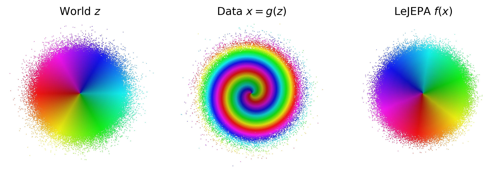
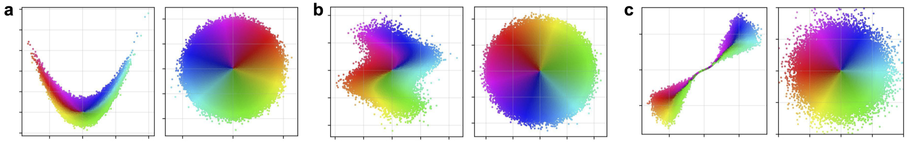
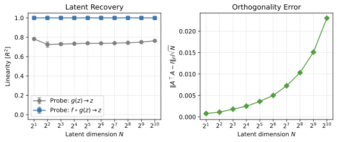
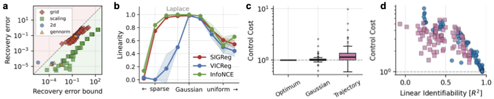
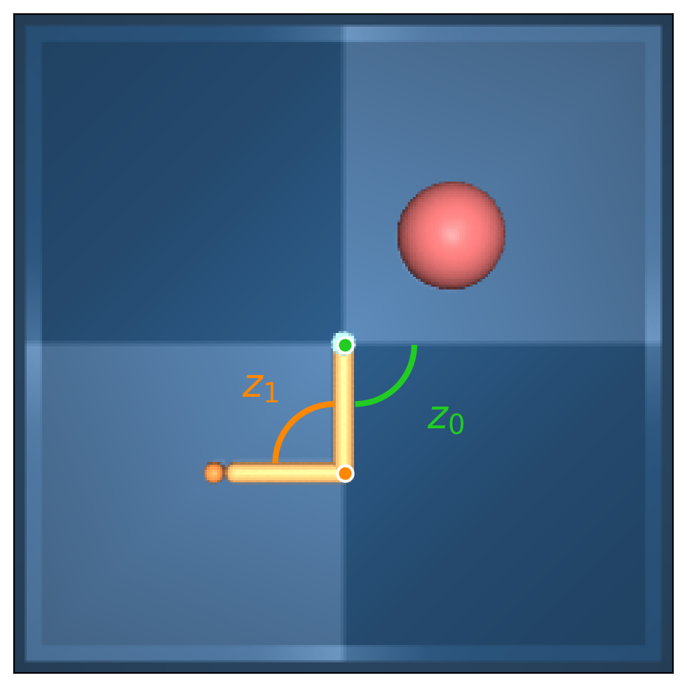

A representation that scrambles the true degrees of freedom of the world cannot support reliable planning or compositional generalization. We prove that LeJEPA (alignment plus Gaussian regularization) linearly recovers the world's latent variables from nonlinear observations — a property known as linear identifiability — in a broad class of worlds where latents evolve under stationary, additive-noise transitions. Our main result is that among all such worlds, the Gaussian is the unique latent distribution for which this guarantee holds. The forward direction rests on a spectral decomposition in which each degree of nonlinearity is strictly penalized by alignment, making the linear map the optimum; the converse rules out every non-Gaussian alternative. We further prove an approximate identifiability result where the guarantee degrades gracefully, and show that linear, orthogonal identifiability enables optimal latent-space planning. We validate the theory across 2D examples to 1024-dimensional latents, distributional ablations, and pixel-based robotic control. All theorems are formally verified in Lean 4.
TL;DR: LeJEPA linearly recovers the world's latent variables — up to rotation — if and only if those latents are Gaussian. The forward direction is a spectral argument on Hermite polynomials; the converse rules out every non-Gaussian alternative. All proofs are checked in Lean 4.

(left) The world has independent Gaussian latent variables. (center) An unknown nonlinear process scrambles them into the data we observe. (right) LeJEPA recovers the latent variables up to rotation. We prove this is the unique optimum.
The world. Latent variables $z \in \R^n$ with independent components and a stationary, additive-noise transition $z' = m(z) + \eta$. The world is observed through an unknown nonlinear mixing $x = g(z)$.
The learner. LeJEPA trains an encoder $h$ to minimize alignment between positive pairs $(z, z')$ subject to a Gaussianity constraint on its embedding distribution:
$$\min_h\ \E\!\left[\,\|h(z') - h(z)\|^2\,\right] \quad \text{s.t.} \quad h(z) \sim \N(0, I_n).$$
The Gaussianity constraint is enforced in practice by the Sketched Isotropic Gaussian Regularizer (SIGReg).
All four results are formally verified in Lean 4 with Mathlib (8,032 build targets, zero sorry obligations). Axiomatized components are standard background lemmas not yet in Mathlib (Hermite polynomial infrastructure, Mazur–Ulam, AM–GM with uniform weights).
2D illustrations. Across four nonlinear mixings (parabolic shear, sinusoidal shear, RealNVP coupling, and a measure-preserving spiral), LeJEPA's learned encoder inverts the mixing up to rotation, consistent with Theorem 1.

Points colored by the polar angle and radius of the ground-truth Gaussian latents. Left of each panel: observation $x = g(z)$. Right of each panel: learned representation, isomorphic to $z$ up to rotation.
Scaling to high dimensions. We sweep the latent dimension $N \in \{2, 4, \ldots, 1024\}$ on a RealNVP mixing with a matched encoder, comparing three Gaussianity-enforcing regularizers: SIGReg, VICReg (second-moment), and InfoNCE (pair-based). SIGReg and VICReg maintain $R^2 > 0.999$ throughout; InfoNCE degrades at scale under fixed kernel width.

Linear identifiability $R^2(h \to z)$ as a function of latent dimension $N$, comparing SIGReg, VICReg, and InfoNCE on a shared mixing.
Distributional ablation & bound verification. Sweeping the latent through the generalized-normal family ($\alpha = 0$ heavy-tailed → $\alpha = 1$ Laplace → $\alpha = 2$ Gaussian → $\alpha \to \infty$ uniform), recovery peaks sharply at $\alpha = 2$, illustrating Theorem 2. Empirically the approximate bound (Theorem 3) tracks the observed deviation from rotation across all runs.

Theorem 3 (approximate identifiability) holds across grid, scaling, gennorm, and Reacher experiments; Theorem 2 (uniqueness) is illustrated by the sharp peak at the Gaussian.
Pixel-based control. On the DMC Reacher, a CNN encoder trained on isotropic OU pairs recovers the two joint angles up to rotation; the same physical system under a goal-directed policy breaks identifiability because policy-induced marginals collapse onto a low-entropy region.

DMC Reacher: latent state $z = (\theta_0, \theta_1)$ consists of two joint angles. Mixing $g$ is the MuJoCo rendering pipeline.
@article{klindt2026lejepa,
author = {Klindt, David and LeCun, Yann and Balestriero, Randall},
title = {When Does LeJEPA Learn a World Model?},
year = {2026},
journal = {arXiv preprint arXiv:TODO},
}